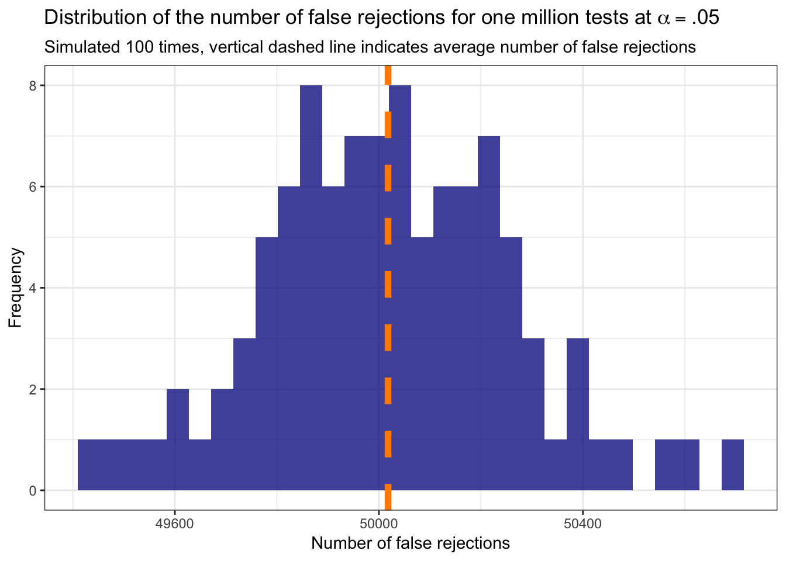

Chapter 2 Intro
A single hypothesis test proceeds by:
- stating a null hypothesis \(H_0\) and an alternative hypothesis \(H_A\),
- constructing a test statistic \(T\) using the data,
- choose a target level Type I (false positive) error rate \(\alpha\) to control for ,
- and rejecting \(H_0\) in favor of \(H_A\) when the probability of observing \(T\) (or more extreme value) when \(H_0\) is true, is less than or equal to \(\alpha\).
However, in modern scientific practice, it is rare for only a single hypothesis to be tested. Consider the example of genome-wide association studies (GWAS) which are observational studies of typically one million or more variants, known as single nucleotide polymorphisms (SNPs), to identify which variants are associated with a trait/phenotype of interest. If we were testing the association with a certain disease for one million SNPs and simply proceeded as above to reject each individual \(H_{0,i}\) for \(i = 1,...,\ n=1,000,000\) when the p-value \(\leq \alpha = 0.05\), then we would expect to reject 50,000 true null hypotheses! The following code demonstrates this exactly by generating z-scores from the null distribution with mean equal to zero for one million tests and reporting the number of false discoveries, repeating this 100 times.
# Access tidyverse
# install.packages("tidyverse")
library(tidyverse)
# Access latex2exp
# install.packages("latex2exp")
library(latex2exp)
# Generate a pipeline function to return the number of false rejections for a
# two-tailed z test with n tests and target alpha applied to each individual
# test without multiple testing correction:
sim_n_z_tests <- function(n_tests, alpha) {
rnorm(n_tests, 0, 1) %>%
{2 * pnorm(-abs(.))} %>%
{which(. < alpha)} %>%
length %>%
return
}
# Generate 100 times the number of false rejections for simple two-tailed z test
# where all the results are generated from the null distribution:
data.frame("n_rej" = replicate(100, sim_n_z_tests(1000000, .05))) %>%
ggplot(aes(x = n_rej)) +
# Generate a histogram of the number of false rejections:
geom_histogram(fill = "darkblue", alpha = 0.75) +
# Add a vertical line at the mean number:
geom_vline(aes(xintercept = mean(n_rej)), color = "darkorange",
linetype = "dashed", size = 2) +
theme_bw() +
labs(x = "Number of false rejections", y = "Frequency",
title = TeX('Distribution of the number of false rejections for one million tests at $\\alpha = .05$'),
subtitle = "Simulated 100 times, vertical dashed line indicates average number of false rejections")
With such a high number of expected false rejections we have to make a correction. The prevalence of the multiple testing problem in science has led to the development of a variety of approaches and methods for correcting/adjusting p-value cutoffs for the rejection decision while accounting for the presence of multiple tests. This initial set of notes covers the fundamentals of multiple testing, briefly explaining the conservative family-wise error rate (FWER) before diving into our main interest of the false discovery rate (FDR).